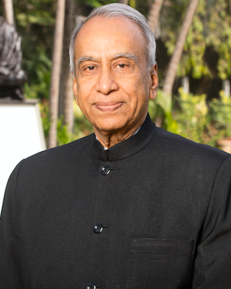

Chairman Shri. Kamalkishor Kadam, Chairman, MGM Group of Institutions, is milestone for MGM Trust. He has complete control on the trust activities. He is a man with strong business acumen and a flair for construction with high aesthetic value, because of his efforts and keen interest, the Mahatma Gandhi Mission have received wide applause, and further, because of his zeal, the MGM has reached to the present heights. He possesses the dynamism to successfully venture into new areas of business and he has proved his mettle time and again. A major force behind the conceptualization of the educational, research, medical institutions and hospitals being set-up by the MGM Trust, Mr. Kamalkishor Kadam has to this credit for the successful implementation of all the other projects of MGM. MGM niche as a premier educational and service group is the result of the dedication of the dynamic individual, who is certainly one of the leading services Trust in our country. Mr. Kamalkishor Kadam is B.E. (Civil) & M.Tech. from IIT Mumbai. Former Z. P. Speaker for Finance, Construction, Education & Health. He was also Vice Chairman of Z. P. Nanded.
| Former Chairman of the Purna Sahakari Sakhar Karkhana Ltd. |
| Former Dy. Speaker, Legislative Assembly Maharashtra State |
| Former Minister for Higher & Technical Education Govt. of Maharashtra |
| Ex-President Marathwada Vaidhanik Vikas Mandal, Aurangabad. |
| Former Director of Marathwada University Sub Centre at Nanded. |
| Former Member of various Govt. Committees. |
| Participated in Commonwealth Parliament Association Conference as representative of State. |